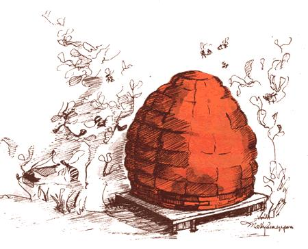
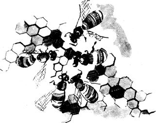

The Honey Trip
January/February 1976
by: Margaret T. Hasse
Cooking with honey has added a lot of adventure to our kitchen experiences, which weren't too tame before. No, I'm not going to hit you with a long "honey is better for you" line (though I'm sure it is). My enthusiasm for this and all natural foods is more from the taste standpoint. Natural food deserves natural sweetening and cooking with honey is fun.
I've experimented quite a bit and learned quite a bit since we made the change from sugar last winter. First I read what The Joy of Cooking had to say, since The joy is usually a good place to start researching a food preparation problem. Then I asked friends. Then I started trying The Honey Trip began when Husband John visited our friendly neighborhood beekeeper to get supplies for my Christmas baking, and came back with a five pound tin plus a honeycomb (a gift). (Tip Number One: Whenever possible, buy direct from a nearby source. If you use honey for all or most of your sweetening you'll need a lot, and this way you'll be able to purchase in bulk and get the best possible price. You'll also be sure that the product meets your standards: unheated, bees fed no sugar or drugs, etc. And quite likely you'll get to know someone a beekeeper who can teach you things you didn't know about bees or honey or whatever.)
All the first recipes I prepared with honey tasted so good, and our beekeeper's prices were so reasonable (only a little more than white sugar per "sweetening unit"), that our use of his wares sort of snowballed and so did our education.
HONEY IS DIFFERENT
First of all, I learned to slow down because naturally sweetened baked goods brown faster (a difference I like). To keep my modified breads and muffins from over browning before they've cooked through, I bake them a little longer at a lower temperature. When I'm converting a new sugar recipe to honey for the first time I automatically knock 250E off the oven setting.
Of course, the same consideration applies to other cooking methods as well as to baking. All dishes made with honey seem to stick a little sooner or burn a little faster. I stir more often than I used to and am forever turning down the flame.
Another point to remember is that honey adds liquid to a recipe: about three tablespoons of extra fluid per cup of sweetening or one quarter cup per pound. Even when you allow for that fact, your baked goods will tend to be moister than those made with sugar and the longer, slower baking which prevents burning also helps keep the texture moist rather than wet.
Finally, honey is slightly acid so I add a little soda (usually 1/8 to 1/4 teaspoonful per cup of sweetening) to most batters and doughs. Not to yeast breads, though, because the leavening thrives in the mildly acid environment.
SUBSTITUTION
Honey is a natural food, not a standardized, "purified" product. Accordingly, there's some variation in its sugar content and in the proportions of the sugars present. Tupelo honey, for instance, has more levulose and less dextrose than other types and can be identified by chemical examination for those substances. Also, honey has taste and the flavor varies depending upon a number of factors such as the weather and what flowers the bees have visited.
These "problems" of flavor and lack of standardization make honey less predictable than sugar and probably cause most of the difficulties people experience when they look for THE RATIO to use in substituting one for the other.
Well, I haven't found THE RATIO either. There is no one proportion that will always "work" that is, always produce exactly the same effect. This lack of an exact, reliable equivalent hasn't bothered me much because I like to consider cooking more as art than science, and the variability of honey is part of what makes each batch an individual achievement.
I have found, however, that light honey is easier to substitute than dark because it's more predictable in flavor and less likely to overwhelm other tastes. (The dark varieties, on the other hand, have a robust quality that's often a welcome change.) I'm told that the bees' output is "safer " taste wise to use if it's aged at least a year, but I can't speak from experience.
At any rate, the sugar in a recipe can generally be replaced with an equal weight of light honey a rule that works out to about two thirds of a cup of liquid sweetening to one of dry. And, of course, you must remember to deduct about three tablespoons of other liquid for each cup of honey you use.
HONEY SYRUP
Using honey to flavor cold beverages (iced tea, fruit ades, etc.) caused a minor problem for us: The golden liquid, introduced into a chilled drink, immediately stiffens. We found that we could overcome this difficulty by mixing one part of water room temperature or a little warmer with three parts of sweetening. Now a bottle of "honey syrup" appears on our table for use with cold foods, or in place of other syrups for pancakes, ice cream, etc. One drawback: Our mixture doesn't keep well and will start to ferment in about a week if unrefrigerated. Which, of course, leads to.
WINE
Honey makes great wine, also known as mead. (See THE MOTHER EARTH NEWS, NO. 5 on wine making, especially Gary Miller's article on page 57.) We recommend using a little less honey than Gary suggests: a pint to a pint and a half per gallon jug. Also, we sometimes add about two cups of fruit juice (we're partial to currant) to the basic mead recipe for a light fruit drink.
JAMS AND JELLIES
We put up a lot of jams and jellies with honey this year and one of the first things we learned the hard way is that small batches are easier to handle and really do make for better quality. The job goes faster that way, too. Honest.
We made peach sumac jam with peaches from the fruit market trash bin (see THE Mother Earth News, NO. 6, "Easy Pickin's", page 17) and sumac extract from roadside staghom sumac (Rhus glabra see Euell Gibbons' Stalking the Wild Asparagus, "A Salute to the Elderberry: With a Nod to Scarlet Sumac", and James Churchill's "Food Without Farming No. 4" in THE Mother Earth News, NO. 7). Out kitchen also turned out elderberry sumac jelly from a friend's elderberries and more of the same "sumac extract"; grape jelly from sour wild grapes that grew around some in town tennis courts; grape jam from other wild pickings sweet this time which we gathered on an island in Lake Pymatuning; and spiced grape jam from more of the Pymatuning grapes plus some incredibly sour crab apples foraged in the same area plus spices to taste. For all these concoctions we used essentially the same recipe:
Prepare and measure the fruit or juice. We make batches about the size recommended by the Sure Jell people (see the direction sheet inside the package) and have had good results with a pound for pound substitution of honey for the sugar the instructions call for. Then use the amount of juice specified per lot, less one quarter cup of liquid for each pound of honey. With really strong wild fruit you may want more sweetening, in which case you should use proportionately less fluid. You needn't be exact, though the process isn't all that scientific: For one thing, you don't know the natural pectin content of the juice.
Mix the honey, fruit and Sure-jell in a deep pan . (The jelly mixture will bubble up to about double its original volume, so be forewarned.) Bring these ingredients to a full rolling boil and boil them hard until the combination passes the "jelly test" usually 15 minutes or so.
To be honest, that "jelly test" is a sore point with us. We have trouble with the old "sheets off a spoon" version, so we devised our own: Drip a few drops of "jelly to be" onto a cold saucer. If it sets to the proper consistency promptly (in one minute or so away from the steamy heat) the mixture is ready. This indicator works well for us and seems to agree both with the spoon business (at which my mother is proficient) and the verdict of a jelly thermometer.
When the stuff passes whatever test you use, ladle it into hot sterilized jars and seal them. (Be sure those containers are hot. It's heartbreaking, not to mention embarrassing, to have a glass shatter in your hand just when you're pouring it full of your beautiful creation.) If you're fussy about looks you can skim the liquid before jarring it. We can never be bothered.
RICE PUDDING BY JOHN
John never liked rice much until we started using the brown kind and he never liked it at all for dessert until the day inspiration hit him: He'd make good old rice pudding, he thought, but with a few minor substitutions.
To prepare John's version, use brown rice instead of white (he usually starts with about two cups of the cooked grain). Then add about a cup and a half or so of milk to the cereal, right in the pan in which it was simmered.
Substitute about half a cup of dates more if you have them and want a sweeter, fruitier dish for the usual raisins. Replace the sugar with honey about a quarter of a cup (less if you don't want the dessert very sweet or if you used a lot of dates, more if the reverse is true). Add a splash of vanilla for good luck and stir well. Cook the mixture over a very low flame for about one hour and give it more milk if it seems too dry or, as John says, "if it gets thirsty". I sometimes grate in just a little nutmeg, but John never does.
DATE BREAD
John, our household date specialist, also developed a good bread recipe that uses the fruit. In two cups of water heat three cups of pitted and cut up dates. To this add two-thirds of a cup of honey, one-third cup of oil (John likes his to be taken from sunflower seeds, but any good, fairly light-flavored vegetable oil is fine) and two eggs. Beat the mixture well we favor a wooden spoon.
Sift together:
3 cups whole wheat flour (If you get a lot of bran when you sift, add it back to the sifted flour.)
1 cup soybean flour (If you don't care for the taste, use less and add more whole-wheat flour and dry milk.)
1/2 cup nonfat dry milk (optional it's been left out a few times)
2 tsp. soda
1 tsp. salt
1 tsp. baking powder (double acting)
2/3 cup wheat germ (or chopped nuts or a combination of both) Mix the dry ingredients, then add them to the wet and stir well.
Grease two 5" X 9" loaf pans, line their bottoms with waxed paper and grease the paper. Turn the' bread into the containers and bake it at 325° (300° in glass) until a toothpick inserted into the loaves comes out clean. Continue the baking another five minutes and turn the finished product out onto racks to cool (remove the wax paper right away).
This date bread may be eaten hot or cold, and it keeps well when given a chance. We especially like it sliced and spread with a mixture of cream cheese and honey.
BREAD
My first successful whole wheat bread was also the first batch I made with honey. Here's how:
For two rather small loaves, take two cups of warm water (110115°F) and add two tablespoons of honey and a little active dry yeast or use cooler water and compressed yeast. After the leavening begins to "work", add a pinch or two of salt if desired and one tablespoon of oil (I'm partial to sesame seed oil) if you want to. Then add whole wheat flour to make a dough which is just barely stiff enough to handle, turn it out onto a well-floured board or what have you and knead in more flour (just enough so the stuff doesn't stick anymore). Knead the mass for about ten minutes, or until its texture feels right or until you're just plain sick of kneading.
Divide the dough in half, make two balls and place them on a greased cookie sheet or whatever flat pan you can find. Do not use a loaf pan, or you might never get the bread out. Grease the loaves well I also grease my hands before I shape the rounds.
Put the bread into a cold oven and turn the heat on low (about 200°) for 20 minutes or so. At the end of this time pull the loaves out and cut slashes in their tops. Replace the flat sheet or pan in the oven, turn the heat up to about 300° and bake the loaves for about an hour.
This is a fairly heavy bread, close grained and hearty. We like it hot out of the oven with butter or honey or jam or cold for sandwiches or toasted. One of the great things about the recipe is the way you can abuse it and still get fine results. I seldom measure anything these days, and often add soybean flour, dry milk powder, nutritional yeast, wheat germ, sunflower or sesame seeds, nuts, dry fruits, etc. More honey makes a sweeter loaf that is especially good toasted. I often eliminate the oil altogether except for what's needed to grease the dough and the pan. The last batch I made got left in the oven at 200° for over an hour before anyone turned up the heat. It was delicious.
Our favorite spread for our favorite bread is made by mixing equal parts of any real peanut butter (prepared from just peanuts) and light honey. Peanut butter and honey and jelly sandwiches are very popular with us, too.
MUFFIN
I've always been told that raised goods baked with honey and whole grains are heavy. Not at all! For proof, here's the recipe for our favorite muffin yes, 1 know I said "muffin", but we don't have muffin tins right now we're trucking around the country in a van and there just isn't room which I bake in a well-greased 10 inch iron skillet. I've developed this dish since we started living on the road and don't know just how it would turn out in conventional pans.
Preheat the oven to about 375° while you sift together: 2 cups whole-wheat flour
2 tsp. double-acting baking powder
1 tsp. soda
Beat:
1 egg (large)
Add:
3 to 4 Tbs. honey
1 cup buttermilk
1/4 to 1/3 cup oil (I like sesame seed oil here, too)
Mix the wet ingredients together and add them to the flour combination all at once, stirring just enough to moisten the batter.
Pour the dough into a greased skillet and bake it until a toothpick inserted into the center comes out clean about 30 minutes. Eat the muffin hot with butter or honey or My invention is also excellent with 1/2 cup or so of raisins and about 1/2 teaspoon of cinnamon added to the dry ingredients before mixing, and or with some sesame or sunflower seeds thrown in. Other dried fruits and nuts are good additions, too, and I sometimes substitute 1/4 to 1/2 cup of wheat germ for an equal amount of the flour.
MAYBE EVEN CAKES. We use honey instead of sugar in everything, and everything tastes better. So far I've never baked a layer cake with natural sweetening only, and 1 haven't missed such a dessert yet and one of these days I'm going to try, just to be sure I can do it. (But with all whole-wheat flour.)
|
 |
 |
 |